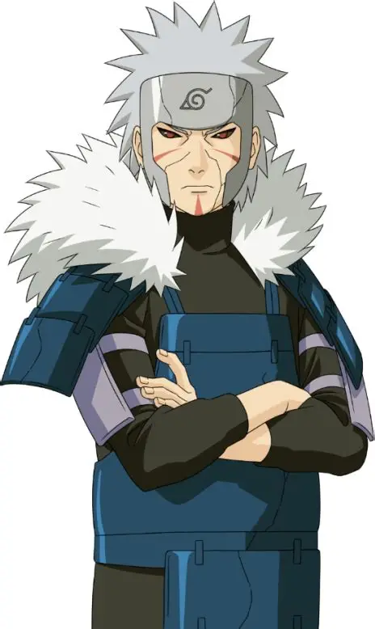

千手扉间，初代火影千手柱间之弟，木叶隐村二代目火影，忍界顶尖智者与忍术宗师，秽土转生形态为其战场强势形态。
一、年少崛起（千手二杰）
出身千手一族，自幼伴随兄长征战乱世，实战经验极为丰富。
性格冷静理智，心思缜密杀伐果断，行事极为注重规矩与大局。
擅长水遁忍术，能够在无水之地强行施展强力水遁，开创独一派系。
与兄长联手平定乱世，一同建立木叶隐村，奠定村子根基。
二、二代火影（执掌木叶）
柱间离世后继任二代目火影，大力整顿村内秩序，完善忍者体系。
建立木叶警务部队、忍者学校等重要机构，完善村子各项制度。
极力压制宇智波一族势力，平衡村内族群关系，稳固木叶政权。
对外强硬稳固边境，震慑周边忍村，让木叶稳居忍界强国之列。
三、忍术开创（禁术宗师）
一生钻研忍术，开创大量实用性极强的忍术与秘术。
独创飞雷神之术，开创时空间忍术先河，身法速度冠绝忍界。
开发影分身之术、秽土转生等诸多强力忍术，流传后世影响深远。
精通多种封印术与感知术，战斗手段灵活多变，战术头脑无人能及。
四、壮烈牺牲（战场断后）
第二次忍界大战时期，带领小队遭遇强敌围堵陷入绝境。
为保护部下安全撤离，独自一人留下拼死断后。
身陷重围依旧奋勇作战，最终力竭战死，壮烈牺牲。
临终前选定猿飞日斩为三代目火影，托付守护木叶的重任。
五、秽土重生（重回战场）
第四次忍界大战中被药师兜以秽土转生之术复活参战。
复活后依旧保留全盛时期全部实力，飞雷神、水遁忍术全力施展。
凭借顶尖时空间忍术穿梭战场，配合联军对抗十尾与反派势力。
熟知各类忍术弱点与战术布局，多次为忍者联军提供关键战术思路。
六、终局释然（灵魂安息）
解开秽土转生束缚后，认清忍界当下局势，放下过往执念。
认可后辈忍者的成长与担当，放心将木叶与忍界和平交由新生代守护。
与兄长柱间一同目送后辈征战，最终灵魂安然回归净土。
七、人物信条
“身为忍者，唯有坚守秩序，方能守护长久安宁。”